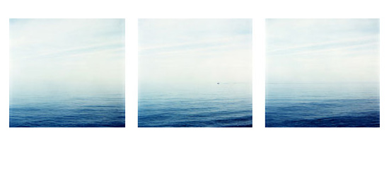

Projects > Drawing on a fictional line.
|  |
In the piece "Drawing on a fictional line" (2003) the triptych is playing with time and space as well as underlining perspective as a function of the eye and the image. In the 3 images we see blue ocean and blue sky, with the horizon washed out as blue meets blue. Yet a boat moving horizontally through the images leaves a trace drawing up the contour of a horizon. The title refers to the horizon being a visual effect of the eye (as well as the image). In reality there is never a clear line as to where the two meet - a horizon is an optical illusion, occurring in the eye (or the image) only. If we follow standard reading in the west - from left to right - we read the images as they where shot. It is the same frame shot at three different moments in time. Yet, the boat and the trace it leaves pulls the eye to read from right to left - as if the tree images represents a panorama the boat is traveling trough. It seems like there is a battle between the representation of time versus representation of space in the 3 photographs. Due to the composition of putting the images next to each-other, form is pushing to override time. |